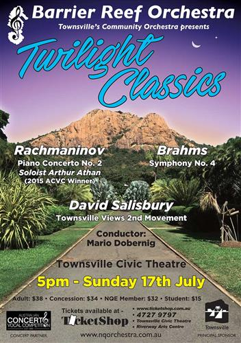

 Guest Conductor:
Guest Conductor:
Mario Dobernig
| Conductor: | Mario Dobernig |
|---|---|
| Soloist: | Arthur Athan (winner Australian Concerto & Vocal Competition 2015 Open Instrumental section) |
| Program: | |
| Johannes Brahms: | Symphony No. 4 in E Minor, Op 98 |
| David Salisbury: | Symphony No. 1: Townsville Views – Movement 2 (Queens Gardens). |
| Sergei Rachmaninov: | Piano Concerto No. 2 in C Minor Op 18. |
| Concert Master: | Stephen Frewen-Lord |
|---|---|
| Rehearsal Conductors: | Andrew Ryder, Ben Fixter |
| Violin I: | Stephen Frewen-Lord, Hannah Curnow, Stacey Lun, Paul Allen, Julia Ramsbotham, Alison Brown* |
| Violin II: | Alexandra Gorton, Melanie Laird, Karly Radford, Susan Fraser, Suva Leitch, Emily Robson. |
| Viola: | Lotta Lindgren, Dannielle Smith* Emily Matthews, Adian Fitzgerald. |
| Cello: | Ivy Wu, Patrick Murphy, Carole Radovanovic, Margaret Loftus, Rebecca Marki, Michelle Heijneman, Una Galvin, Michael Carroll. |
| Double Bass: | Katryn Strong,* Stephen Kluver, Emma Wootton. |
| Flute: | Shinako MacDonald, Cassandra Cooper. |
| Piccolo: | Cassandra Cooper |
| Oboe: | Bernie Gillard* Keelie McKenzie |
| Clarinet: | Monica Ward, Rianta Belford |
| Bassoon: | Sarah Hill, Helen Land |
| Horn: | Andrew Ryder, Annie Doherty, Amy Gutterson, Daniel Harley. |
| Trumpet: | Ben Fixter, Shelley Gardner. |
| Trombone: | Emi Myosi, Mark Land, Amy Windsor. |
| Tuba: | Andrew Hodgson |
| Timpani: | Noel Price |
| Auxiliary Percussion: | Ruby Ansic |
| *Brisbane ^Melbourne |
Guest Conductor:Mario Dobernig